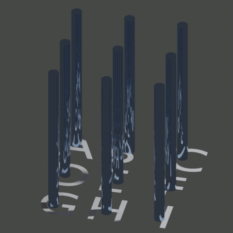

The idea behind this repo is to create a project for a browser-based 3x3x3 tic-tac-toe game. As such it will have 27 spaces, 2 colours (red vs blue) This creates a couple smaller considerations
As it is a 3x3x3 grid, it will have 27 spots. Thus, it will presumably be done as 2 32bit integers to store the board, for speed and efficiency. When 3x3 grids are done, a common implementation is to memorize all the possible lines to check along. on a 3x3x3 grid there are [orthogonal, 2d diagonal, 3d diagonal] (9*3) + (6*3) + 4 lines along which to have a victory condition. The total number is 49. Fortunately, as pieces are affected by gravity, there are at most only 9 moves one can make.
It is going to be a client-server program, with python at the back-end and JS/HTML for the front end. Rendering the board can be done orthographically (but the x and y axis will have to be rotatable). Client-server communication can be done using POST request, as cryptographic security is not a concern. Python can handle POST requests and web-serving using flask (for now).
Temprorary link , as of Jul 18, 2022